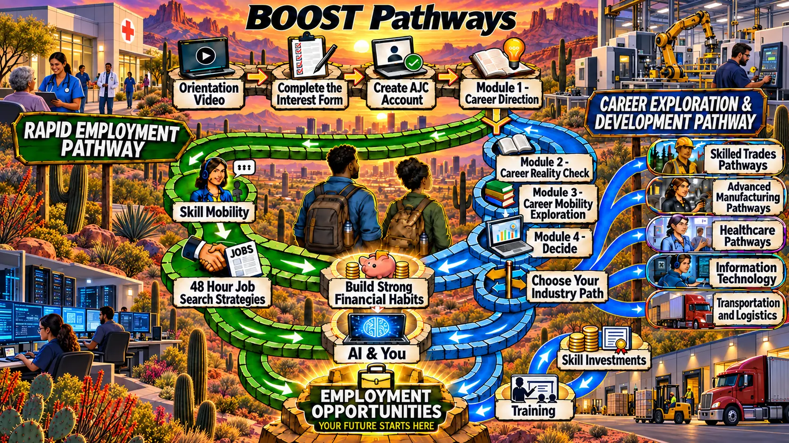

All destinations are visible without login or prerequisites. Guest module interactions are being validated separately, so this preview never writes participant or coach progress.

Explore the destinations
This is an isolated showcase preview, not a participant account. The original Discover module is the first staged guest destination; its URL will work after the guest branches are deployed. Other modules remain sample-only pending isolation testing.